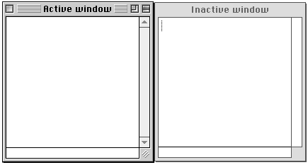
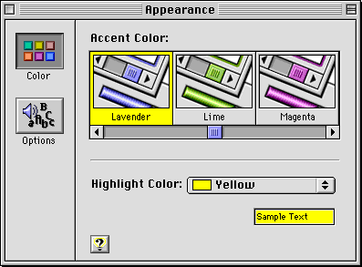

Windows Under Platinum Appearance
Windows are designed for visual consistency across all monitors from black-and-white displays to 24-bit color displays. For display on color monitors, colors and shades of gray have been added to the frames of windows and to user controls to emphasize those areas that users interact with. The document window content area remains white on all systems unless the user assigns color to the content.Color and design distinguishes the active window from other windows and enhances the appearance of user controls on the window frame. The user controls--close box, size box, zoom box, collapse box, and scroll box--are highlighted by outlining, beveling, and other "three-dimensional" techniques to make them more apparent. The borders of inactive windows are a flat, light gray color which appears to recede into the background, while the active window's darker frame and colored areas emphasize its position in front of the other windows. Figure 5-1 shows the appearance of active and inactive windows.
Figure 5-1 Active window vs inactive window

Note that windows may now be moved by clicking and dragging anywhere in the drag region. Under platinum appearance, the drag region appears as a narrow gray frame around all sides of the content region. Your application should not assume a specific size or appearance for this drag region, however, as these aspects depend on the Appearance settings in effect at a given moment.
Users can change the color used in window and dialog box accents by using the Appearance control panel. Accent colors affect a number of objects used in windows, including
Figure 5-2 shows the Appearance control panel and some of the accent colors that the user can choose for windows and dialog boxes.
- scroll bar indicators
- progress indicators
- slider indicators
- focus rings
Figure 5-2 Defining accent colors through the Appearance control panel

If you use the standard window definition and control definition functions, your application's windows will be Appearance-compliant under all conditions. If you must create custom windows, you should use the system-defined color palette to ensure your colors will work with the current Appearance suite.
Subtopics
- Document Windows
- Utility Windows